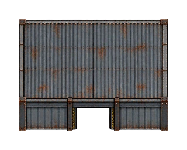
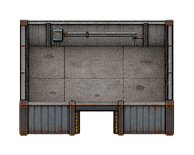
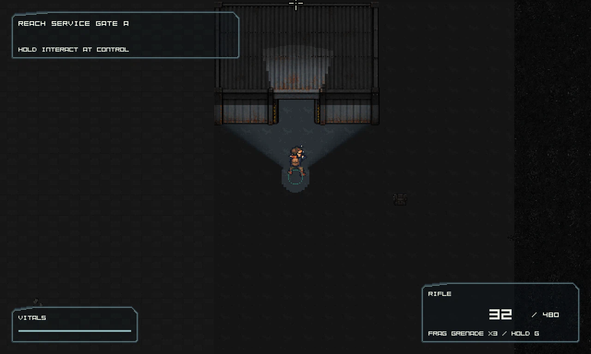
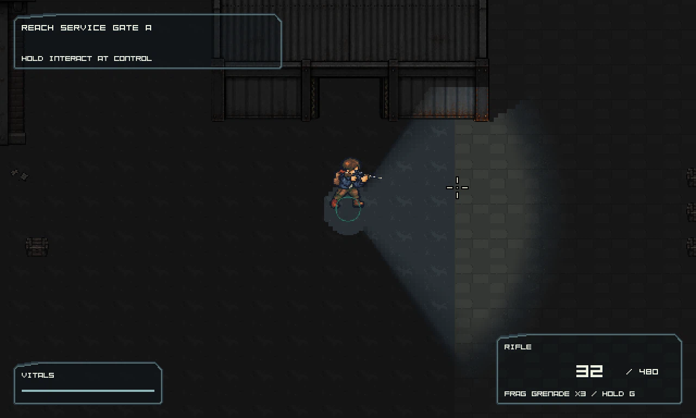
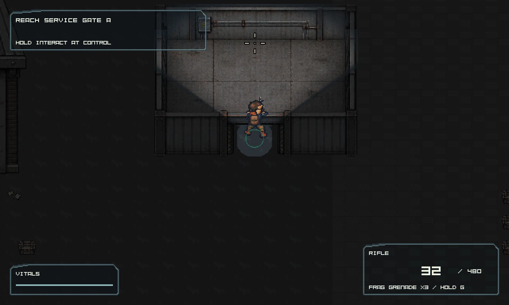
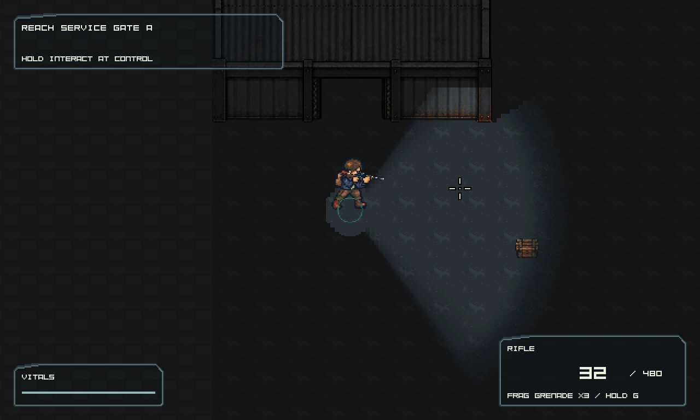
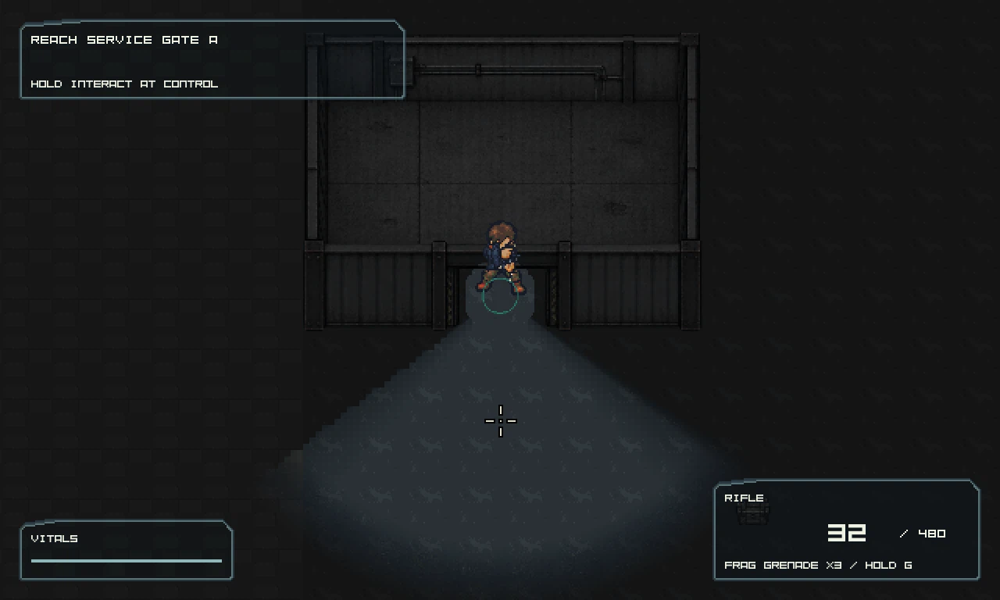

Runtime slice: authored 8x6 tile rooms on a 32px grid. Previous artwork is preserved. Collision walls, centered doorway and roof cutaway use the same registered footprint for both instances. Full environment and human art acceptance remain open.
Play candidate · Technical report · Review and limitations







Render fixtures establish isolated entry, exit and reentry. They do not certify complete escape traversal, crowd readability or human playtests.